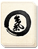
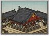

Requires
- Arts: 
Enables
- Buildings: 
Basic Building Statistics (can be modified by difficulty level, arts, skills, traits and retainers)
- Cost: 850
- +200 to wealth from commerce in this province
- +5 per turn to town growth from commerce within this province
- Enables recruitment of Rank 1 metsuke
Clan Effects
- Each market chain building enables you to sustain one additional metsuke (to a maximum of 5)
Description
When two men meet in honesty, both may profit from the day.
A market adds to a province's wealth and growth, and also allows a clan to recruit metsuke as agents. When two peasants barter, there is a market. When many come to do the same, there is wealth to be made and probably taxed. A permanent market can offer many services and goods for everyone in the province, and allow people to sell their surplus goods. Once people can trade, they can specialise, even a little, produce more and then trade for what they lack. A wise ruler encourages this. It was, of course, beneath any samurai to engage in anything as common as trade. Wealth came from rents, land ownership and in rewards for loyal service. Often, wealth was accumulated in the form of rice koku, as taxes in kind. It was left to others to do business, and live as merchants in towns. Under the Tokugawa Shogunate, the merchants did gain a certain practical influence, because they were the only people that the rice-rich daimyos and samurai could sell their koku to. The rice bartering system was never able to compete with a proper cash economy, if only because of the difficulty of moving mountains of rice sacks around!